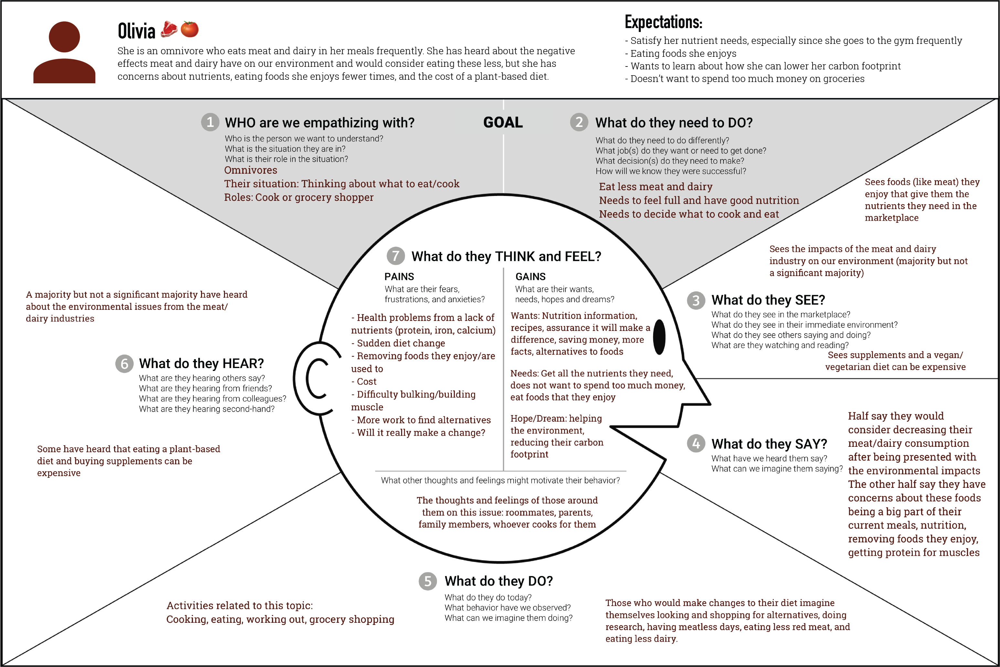
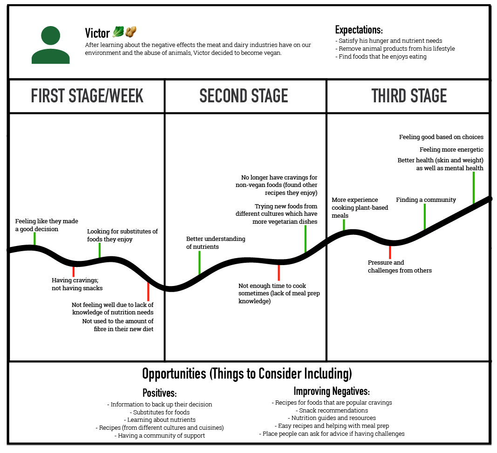

My Role: Everything (This was a solo project)
Timeline: March 1, 2021 to March 19, 2021
Topic: Environment and Education
My Role: Everything (This was a solo project)
Timeline: March 1, 2021 to March 19, 2021
Topic: Environment and Education
Climate change is a large issue being discussed now, but since it’s so large, sometimes I question how much my individual actions could really help the problem.
In March 2021, I entered a design challenge which challenged its participants to think about how we can create social transformation that shifts users towards greener behaviour and sustainable practices. After researching recommended greener behaviours that I could implement in my lifestyle and looking at ways I could decrease my carbon footprint, one of the major ways that I wanted to explore more was eating less meat and dairy.
With this topic in mind, I set this as my goal: How might I motivate users to lower their carbon footprint through shifting their behaviour towards eating a plant-based diet?
By eating more plant-based meals, people could decreasing their meat and dairy consumption, which would help them lower their carbon footprint. However, I was sure that many people, including myself, would have worries about switching their diet, so I moved on to doing user research with omnivores to learn about their concerns and vegans to learn about their journey of giving up meat and dairy.
I created a survey which I sent to omnivores, vegans, and people with other diets asking them open-ended questions to learn more about them. Based on the results from my research, I created two personas.
This is Olivia who represents the omnivores in my research, and this is an empathy map about her. In my survey, for omnivores, I wanted to see what they valued in their diet, their awareness of how the meat and dairy industries affect the environment, concerns and more. The major trends in my research can be found in this empathy map:
My main takeaways from surveying omnivores like Olivia were
This is Victor who represents the vegans in my research, and this is a journey map about him. In my survey, for vegans, I wanted to understand their journey of becoming a vegan and learn about their highs and lows in their journey. Their highs would allow me to know what should be included in my design, and their lows would show me problems my design needed to solve. The major trends in the journey of vegans from my research can be found in this journey map:
The highs include
One major thing I learned from people like Victor is how important a community is to them where they can motivate and help each other whenever they are in the low points of their journey.
Based on my user research and these personas, I knew that I should create something that achieved the following:
My solution was a resource that could achieve these four goals through 2 parts:
The first is a website with information on nutrition and the environment. I chose a website because there are many helpful online resources on these topics which I could link the users to and it would be a good place to build an online community.
The second way is partnering with grocery stores. On the website, there would be recipes that use the ingredients that a grocery store is already promoting in their grocery flyers. In return, the grocery store could promote the website through putting posters in their stores or in their flyers.
By working together and showing that users can lower their carbon footprint, get the nutrients they need, and save money all at the same, my solution could help make users more willing to try out plant-based meals. This combination of environment and flyers resulted in my website Enflyerment!
While you were grocery shopping, you would see a poster like this with a recipe using ingredients that are currently on sale. After scanning the QR code, you would be led to a page of plant-based recipes for breakfast, lunch, and dinner: a whole day planned out for you all inspired by ingredients found in grocery flyers. In my research, not all users were willing to go on a plant-based diet only based on environmental benefits so having this incentive that you can save money is important to motivate this group of users.

From there, you can find pages to learn more about the environment, popular recipes, plant-based alternatives, and nutrition. Many of the resources on the nutrition pages were recommended from the vegans that I contacted through my research.
Finally, is the online community. There is a link to a discord community on my website where people can share their questions, photos of food they made, etc. with one another. Members in the community could also share recipe ideas to inspire each other and if they are willing, for Enflyerment to use in the grocery flyer posters so that even more partnerships with grocery stores can be created.
I tested my website and one of the main feedback I got was the website lacked a hierarchy on the home page. The grocery flyer recipes were blended in with the other information so I made changes to make it more prominent. Now, there are grocery store logos that link to the recipe pages for those specific stores to help users navigate my website more easily and to make these partnerships more clear.
Lastly, one of the other bigger changes I made was for the poster because many people said that they would only skim it since it was quite text-heavy. Based on their feedback, I added more visuals to catch people’s attention, such as the decreasing carbon footprint icon and added a QR code for the recipes page, to give more incentive and make it easier for people to visit the website.

And that’s Enflyerment! I hope it’s help shown you that plant-based eating is a way to help our environment and it doesn’t have to be expensive. Feel free to check my website out by clicking the button below!
To continue looking at my work, you can go back to the UX Design projects page or click the button below to see the project I worked on after Enflyerment. Thank you for looking at my work!